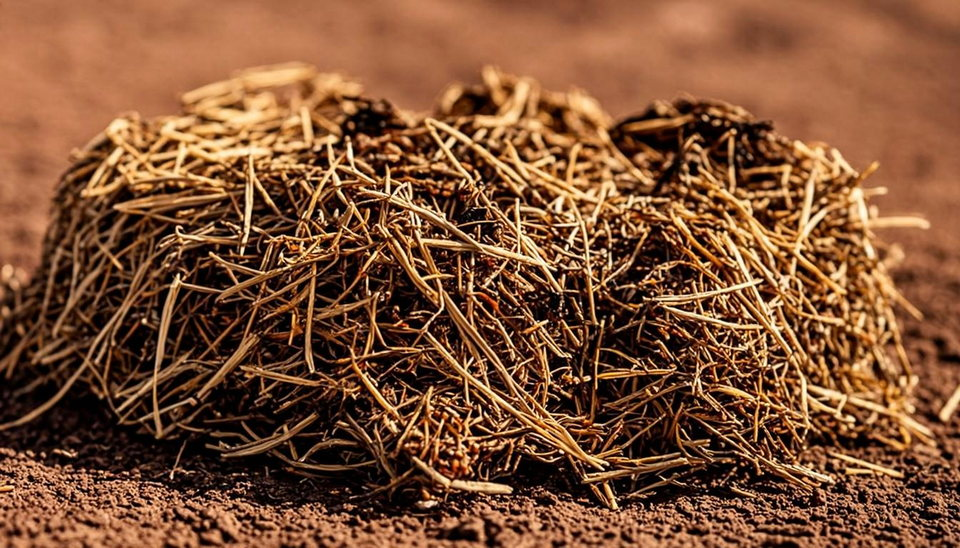

The Resource
A material long used in Indian homes.
Cow dung has long been used in traditional Indian wall and floor coatings — valued in daily rural life and treated as a useful material rather than a waste.
Gaurikrit begins from that recognition: a natural material already embedded in Indian material culture. Its Prakritik Paint carries that material idea into a contemporary paint format.
